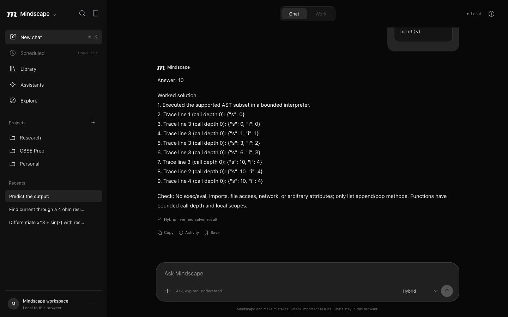
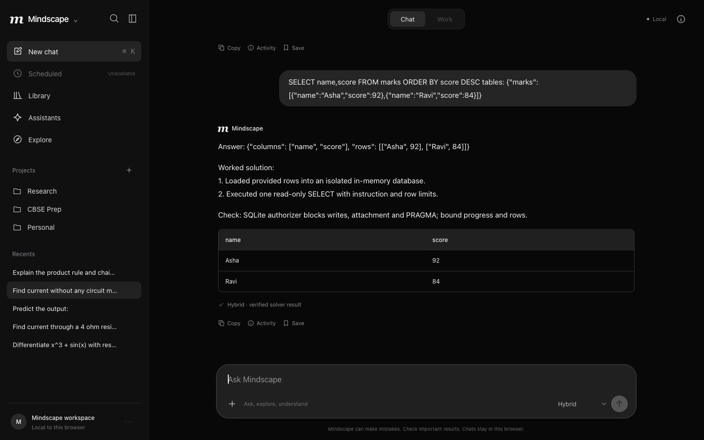
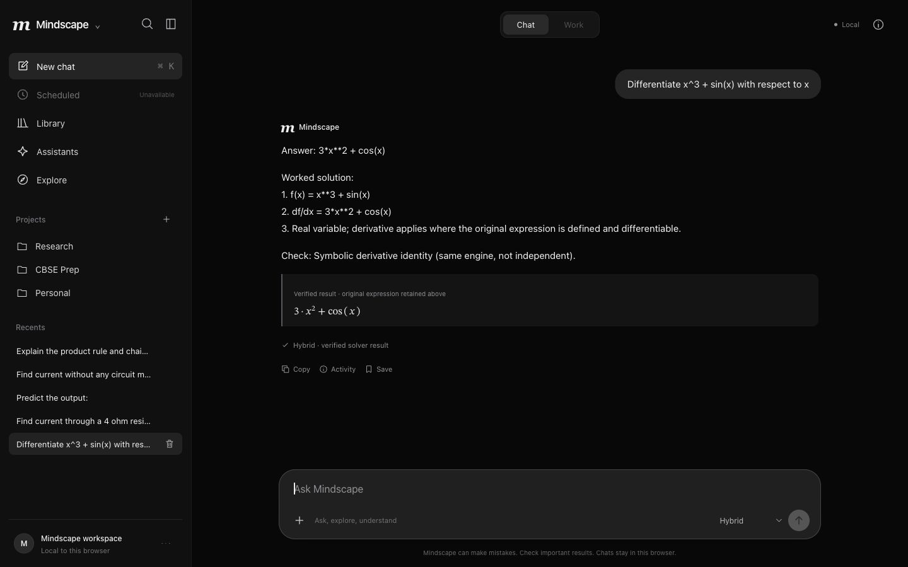
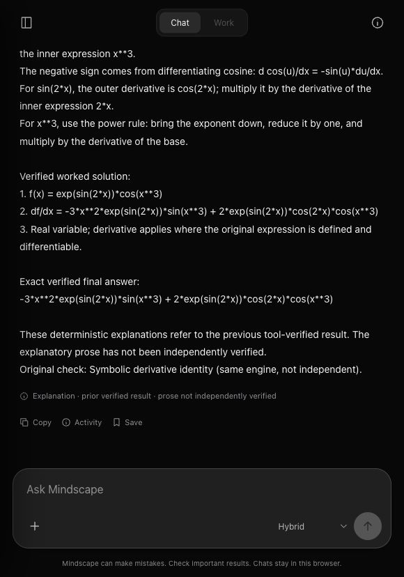

Introducing Mindscape Epitome
↓Introducing Mindscape Epitome
Intelligence, structured.
Mathematics. Physics. Programming.
One intelligent system.
We’re introducing Mindscape Epitome, our applied AI reasoning system for supported scientific and computational problems.
Developed under Mindscape’s Applied Reasoning & Verified Intelligence research vertical, Epitome brings together neural intelligence, structured computational methods, scientific problem-solving and explicit verification.
Built around pretrained neural models and Mindscape-developed reasoning infrastructure, Epitome is designed to interpret supported complex problems, execute structured calculations, verify results and explain solutions in a clear, conversational way.
From advanced mathematical expressions to electrical networks and program execution, Epitome turns questions into structured, verifiable outcomes.
Epitome presents the detachable Candidate C hybrid system under its new name. The native Mindscape architecture remains a separate experimental research track.
Performance, measured.
Evaluated on challenging STEM problems, Epitome produced 36/36 correct answers on a targeted hard benchmark and 12/12 on a separate release holdout. On the matched hard set, this is a gain of 22 correct answers, or 61.11 percentage points, over the preserved Candidate B baseline.
Targeted STEM benchmark
Correct answers · 36 questions12 questions per subject. Initial C run: 36/36 correct final answers, 35/36 consistent worked responses. A Bayes formatting correction preceded the separate release holdout; the later hard-set rerun is regression evidence.
Separate release holdout
Correct answers · 12 questionsFour questions per subject, locked after the formatter correction. Epitome’s release worked responses were also 12/12 consistent. These remain small, deliberately targeted task families.
Grounded follow-up validation
Feature commit eaf0c46Reported checks for the newer conversational feature branch. Thirty warm follow-up samples: 2.51 ms median, 2.65 ms p95; no additional neural or solver inference. Test pacing is excluded. These are not full-solve latency measurements.
These results measure bounded, often schema-driven computation. They do not demonstrate complete Class 12 syllabus mastery or unrestricted natural-language reasoning. Gains primarily reflect deterministic solvers, routing and verification, with no additional pretrained-model training.
01 / Mathematical intelligence
From expressions to
verified solutions.
Epitome supports mathematical problem-solving through neural interpretation and structured symbolic computation. It preserves the structure of a problem, carries out supported operations and presents a worked solution.
Composite differentiation uses chain, product and quotient rules. Other supported tasks include definite integration, matrices, determinants, linear systems, conditional probability, Bayesian calculations and selected first-order differential equations.
Differentiate esin(2x) cos(x3)
For the expression above, the system differentiates each factor, identifies the relevant rules and preserves the resulting derivative alongside its original worked solution. A follow-up can then explain why those rules apply.
Inspect the recorded example ↗02 / Physical reasoning
Physical principles.
Computed outcomes.
Physics capabilities use structured quantities, equations, unit checks and computational methods to solve supported scientific problems.
Supported calculations cover Coulomb interactions, multiple-charge vectors, resistance networks, Kirchhoff-style circuit analysis, electromagnetic induction, ray optics and the photoelectric effect. Units, conversions and supplied sign conventions remain part of the result.
ε = −N ΔΦΔt
A changing magnetic flux.
A specified direction.
A calculated outcome.
Given a changing flux across a coil, Epitome calculates induced electromotive force using the supplied values and specified flux direction. Complex circuits and new physics tasks may require explicit structured inputs.
03 / Computational intelligence
What code actually does.
Epitome includes bounded programming-analysis capabilities that evaluate supported code structures and calculate their execution outcomes.
Python functions, nested loops, recursion, exception handling, variable scope and stack operations can produce structured execution traces. Inline CSV analysis and read-only SQL joins, grouping, aggregation and subqueries extend the computational scope.
The system can explain a supported program’s output using its evaluated trace. Arbitrary Python execution, host-file access and unrestricted system access are excluded.



An answer is only
the beginning.
Introducing context-aware explanations. After solving a supported problem, the conversation can continue: explain a formula, simplify a concept, clarify an earlier step or describe why a program produced a particular output.
The explanation system references a previously verified result, its stored problem representation and solution steps. The original checked answer remains preserved.
No need to restate the original question while the matching context remains available. The current implementation supports bounded, temporary context for formulas, selected steps, mathematical signs and supported programming traces.
Grounded explanations are in feature commit eaf0c46, beyond the merged main snapshot reviewed on October 15. Context expires after 30 minutes, server restart or cache eviction. Follow-ups preserve a verified answer; they do not independently verify the explanatory prose.
Engineered for
verifiable intelligence.
Epitome combines complementary components: a pretrained neural backbone provides advisory interpretation, Mindscape routing organizes supported questions into meaningful structures, and dedicated tools carry out the computation.
Verification routines check supported results and preserve their scope and provenance. Conversation-aware components can then build explanations from a matching, previously checked solution.
- 01
Interpret
Local pretrained neural advice.
- 02
Represent
Structured problem and routing.
- 03
Compute
Bounded mathematical and scientific tools.
- 04
Verify
Checks, units and method provenance.
- 05
Explain
Grounded follow-up context.
The local backbone is Qwen3-0.6B. Candidate C’s expanded performance comes primarily from Mindscape-developed computational pathways, routing and verification. No new pretrained-model fitting is claimed.
The integration is detachable: native source, checkpoints, training and research history remain separate. Some symbolic checks share the computation engine and are not independent proofs.
Explore the applied architecture ↗A space to ask.
A process to inspect.
A responsive conversational workspace brings together mathematical working, code, structured tables and answer provenance. Browser-local history, projects and a Library of saved answers keep useful work close at hand.

After initial setup and model download, the application operates locally without a paid inference API. Conversations and projects are stored in the browser. There is no cloud-account synchronization.
Mindscape
Researching intelligence.
Building what comes next.
Mindscape is an artificial intelligence research initiative exploring structured cognition, grounded reasoning, neural intelligence and verifiable computational systems.
Our research spans cognitive architectures, neural generalization and advanced applied reasoning. Epitome is one of our most developed engineering systems; its hybrid capabilities are reported separately from the native research.
R6 native-model experiments exposed mathematics and coding collapse. R6.1 diagnostics identified an encoder information-flow bottleneck and a masked-pooling correction. Whether that correction improves learned generalization requires a separate experiment.
The research record includes successful engineering and negative findings. Understanding model failure remains part of developing better architectures.
Explore Mindscape research ↗Explore Epitome.
Epitome is available as a local hybrid prototype in the Mindscape source repository. Create its separate environment and download the pinned official model once, then start the local assistant.
cd integrations/hybrid
./setup.sh
./start.sh
# Open http://127.0.0.1:8765For grounded explanations, use the newer context feature commit. This website documents the system; it does not host model inference. The service is designed for single-user loopback operation.
Measurement notes
- Hard benchmark: 36 supported STEM questions, 12 per subject. Release holdout: 12 separate questions, four per subject. Both sets target bounded Class 12-style families; complex inputs often use explicit JSON schemas.
- Candidate C: 36/36 hard answers and 35/36 consistent worked responses before a Bayes equality formatting fix. The corrected system achieved 12/12 release answers and consistent worked responses. Reused hard36 results are regression evidence.
- Candidate B’s historical 31/36 score belongs to a different campaign. The matched comparison here uses 14/36. Gains are attributed to tool and routing improvements, with zero pretrained optimizer updates.
- Hard-set warm p95 was 8.80 s for C versus 5.85 s for B. C is slower in this campaign. Follow-up millisecond timings measure a separate deterministic path and exclude the 150 ms pacing used in the reported HTTP checks.
- Some verification routines share the computation engine. Implementing-agent review used separate references; independent human or blinded-team validation is not claimed.
- Python and SQL execution are bounded. General code execution, host files, network access, unrestricted natural-language circuit analysis and full-syllabus mastery are outside the demonstrated scope.